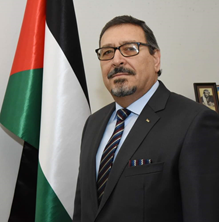

Ambassador Extraordinary and
Plenipotentiary of Palestine to Ukraine
CURRICULUM VITAE
Hashem Hasan Dajani
EDUCATION:
-
1984
M.A. in International Relations and International law (Taras Shevchenko University of Kyiv in
Ukraine).
-
1/9/1987-1/7/1995
Deputy Director of the PLO Information Office in Helsinki, Finland.
-
1/7/1995
Appointed Deputy Head of Palestine General Delegation to Finland (Counsellor).

-
2005 - 2006
First Counsellor and Acting Head of Mission at the Palestine General Delegation to Finland.
-
23/12/2007 - 16/9/2015
Ambassador Extraordinary and Plenipotentiary of the State of Palestine to the Republic of Zimbabwe since
December 2007, presented credentials on the 8* March 2008.
-
17/3/2010-16/9/2015
Non-Resident Extraordinary and Plenipotentiary of the State of Palestine to the Republic of Malawi,
presented credentials on the 17» March 2010.
-
27/09/2015 – 01/12/2019
Ambassador Extraordinary and Plenipotentiary of the State of Palestine to the Republic of South Africa
(credentials presented on the 26* November 2015).
-
17/02/2016 – 01/12/2019
Non-Resident Ambassador Extraordinary and Plenipotentiary of the State of Palestine to the Republic of
Namibia.
Non-Resident Designate-Ambassador Extraordinary and Plenipotentiary of the State of Palestine to the Kingdom
of Lesotho.
Member of the Palestine National Council from April 2018.
-
29/05/2020
Ambassador Extraordinary and Plenipotentiary of Palestine to Ukraine (Credentials presented on the 29th of
May, 2020
Languages: Arabic, English, Russian, Finnish
Married with two children
OTHER DETAILS:
-
Completed The Third International Senior Diplomatic Training Course at the Centre for Education and Training
of the Department of Foreign Affairs of the Republic of Indonesia held from 30 March to 24 April 2009.
-
Completed the International Migration Law Course presented by the International Organization for Migration,
from 7 to 8 April 2009 in Jakarta, Republic of Indonesia.
-
Received a Doctor of Philosophy Certificate from the Interdenominational Church Council, Council of Churches
of South Africa & the Divinity College Consortium on 24 November 2018.
-
Received a Merit Certificate of Peace from the Interdenominational Church Council, Council of Churches of
South Africa & the Divinity College Consortium on 24 November 2018.
-
Ambassador for Peace from the Universal Peace Federation.
-
Awarded a Certificate of Appreciation from the Zimbabwe Institute of Diplomacy on 14 September 2015.
-
Awarded Diplomat of the Year 2012 from Middle East
-
Awarded Diplomat of the Year from Middle East and all Arab Nations in Africa - Runner up.
-
Awarded Diplomat of the Year 2015 - 2* Runner up.
-
Awarded Diplomat of the Year from Middle East 2015
-
Participated in several international congresses, meetings and seminars on issues related to Palestine
-
Former Activist and leader in Palestinian Student Movement and Youth Movement
-
Founder of several societies, especially ones related to Palestinians